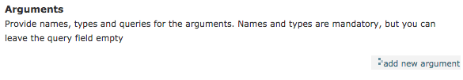
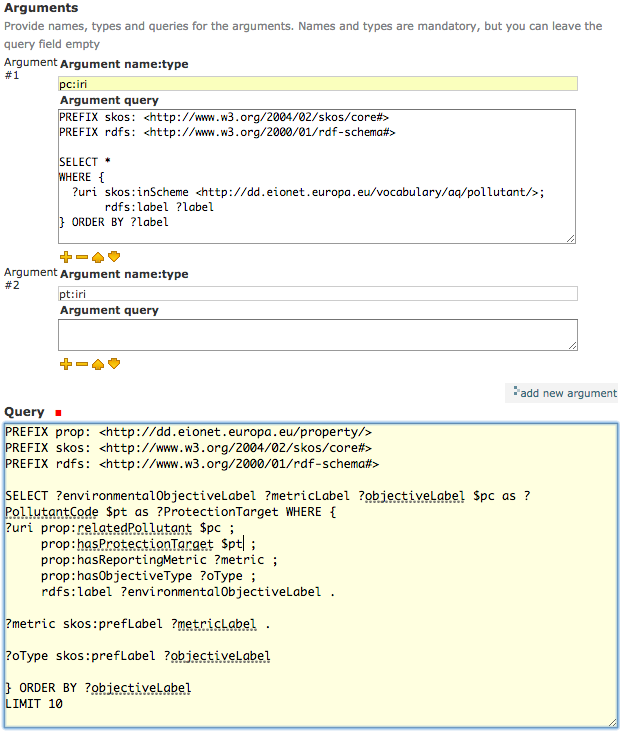
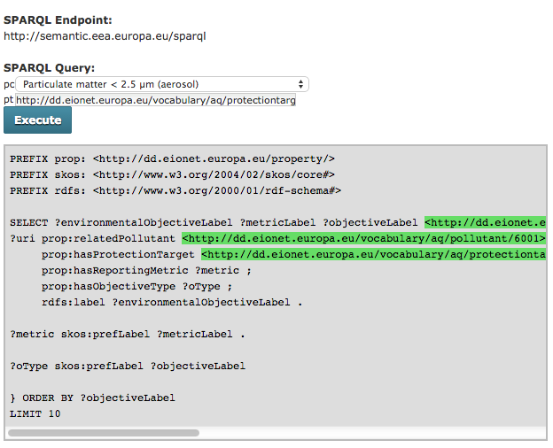
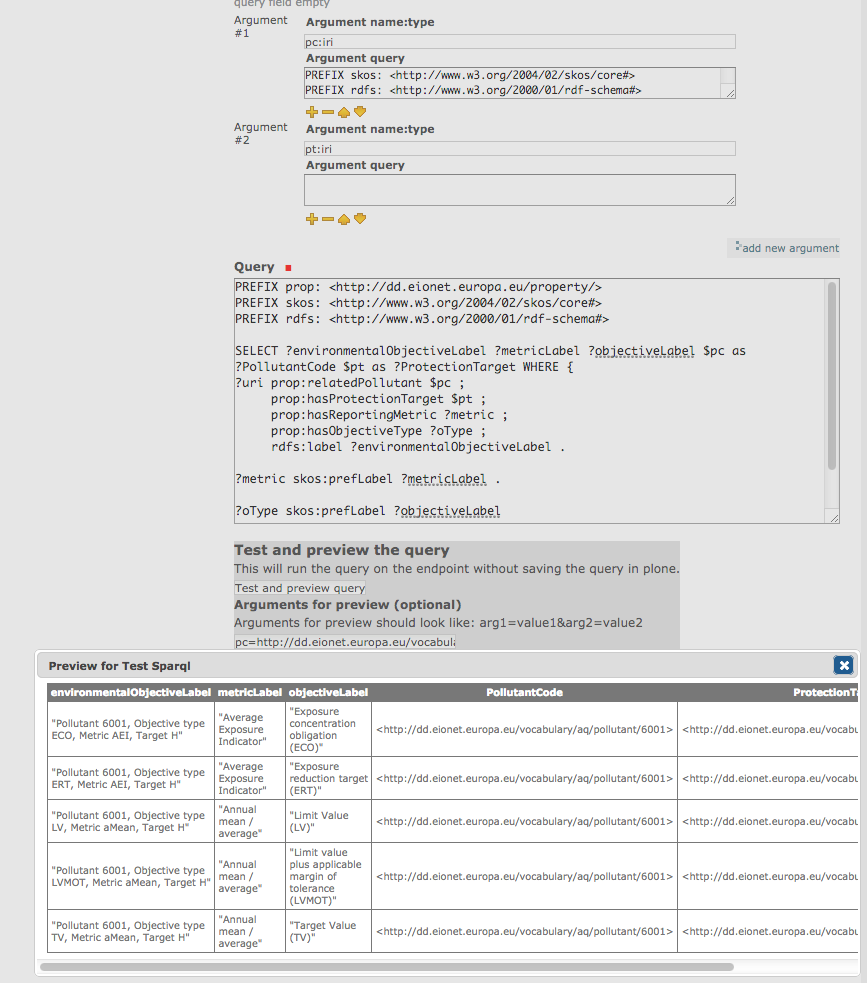

EEA Sparql Documentation - working with arguments¶
EEA Sparql has a wide array of APIs that let you extend it’s functionality.
How to Create a SPARQL Instance with One or More Arguments¶
This tutorial assumes that the EEA Sparql product has already been installed. For information about this topic, please check README.rst. The tutorial will, however, provide information about how to create and edit a Sparql with no, one or multiple arguments.
Where should I start?¶
Within your working Folder add a new Sparql (Add new -> Sparql)

The main fields to edit in the Default tab are:
- Title - (required) give a relevant title to your Sparql element
- Description - provide a description for the query’s purpose/results
- Sparql endpoint URL - (required) the endpoint that will be queried with your query
- Timeout(seconds) - (required) choose how much time the endpoint will wait for results. If the time passes and nothing is returned, the endpoint will no longer wait, so if the query requires a lot of time to run, choose a higher timeout value
- Arguments - initially no argument is defined, but the user can add as many as possible
- Query - (required) the query used to obtain results from the endpoint. It can be parametrised
- Test and preview the query form - provide test arguments to see if the query is correct and what results it returns
- Refresh the results - (required) decide how often the endpoint will be queried for results
Creating a simple SPARQL object with no arguments¶
To create a simple SPARQL with no arguments, simply fill in the required fields:
- Title
- Sparql endpoint URL
- Timeout (seconds)
- Query
- Refresh the results
Adding arguments to a SPARQL object¶
Arguments are added to the Sparql from the “add new argument” button.
This will add a new input: the argument. The argument has two fields:
- name:type
- query
1. Argument name:type¶
The first field of the argument requires a name and a type for it. Without this field, an argument is invalid and it will not be considered further on. The name is something that the user choses and it can be anything. However, the type of the argument may have one of the following values:
- n3term - parse the value assuming N3 syntax
- iri - IRI
- string - plain literal
- integer - typed literal, XSD_INTEGER
- long - typed literal, XSD_LONG
- double - typed literal, XSD_DOUBLE
- float - typed literal, XSD_FLOAT
- decimal - typed literal, XSD_DECIMAL
- datetime - typed literal, XSD_DATETIME
- date - typed literal, XSD_DATE
- time - typed literal, XSD_TIME
- boolean - typed literal, XSD_BOOLEAN
Therefore, if the user wants the argument to be a string named “text” he will fill in with the value: text:string and if he needs a URI named “myURI” he will fill in with myURI:iri.
The original query should be changed when arguments are added. Arguments are identified in the query by the prefix “$” so the argument defined like myURI:iri will be $myURI in the query. $argumentName will be replaced with real values only when the user choses a value for it and the “Execute” button is pushed.
2. Argument query¶
This field is optional. If the user does not provide a query for an argument, the argument can take any value from an input field.
When needed, this field should be filled with a query whose results should be values for the argument defined. The query may return one or two columns. When it returns only one, the results of the argument query become values in a dropdown list from which values are chosen for the argument. When two columns are returned in the argument query, the first one will be the real value, while the second one will be the displayed value. This option is useful in the case of URIs, to have the second column as the labels of the first column’s URIs.
Testing a new SPARQL object¶
Queries and arguments can be tested in the “Test and preview the query” form. In case the query has no arguments, nothing is to be filled. When the query has arguments, they sould be given values in the following form:
- one argument: arg=value
- more arguments: arg1=value1&arg2=value2&...
Therefore, if the user defines two arguments, name:text and uri:iri, he will have to fill in with values like:
name=Iulia&uri=http://iulia.com
By pushing the “Test and preview query” button he will be able to see the query’s output with the defined argument values.
